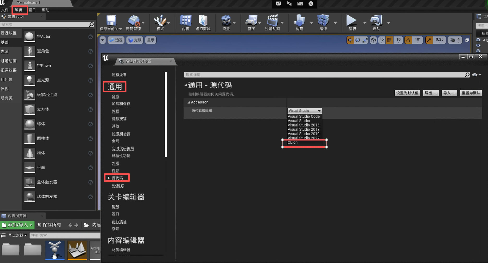

CLion
1. 创建 CLion 工程文件
- 在虚幻引擎中打开 Holodeck
- 选择菜单中的：编辑 -> 编辑器偏好设置 -> 通用 -> 源代码 -> 源代码编辑器 -> CLion
- 选择菜单中的：文件 -> 生成 CLion 工程 (如果项目已生成，则此选项将显示为“刷新 CLion 项目”)

2. Open the project in CLion
Open the project from the project root in CLion or in Unreal Engine Editor goto File -> Open CLion
3. Edit the configurations
Note: You need to copy libopenvr_api.so from {where you cloned ue4}/UnrealEngine/Engine/Binaries/ThirdParty/OpenVR/OpenVRv1_0_16/linux64 to holodeck-engine/Binaries/Linux to be able to run/debug the game following these instructions.
- In CLion goto Run -> Edit Configurations (also available in the run section of the toolbar)
- Select Holodeck-Linux-DebugGame
- Set the value in Executable to {HOLODECK-ENGINE-ROOT}/Binaries/Linux/Holodeck-Linux-DebugGame
- Leave 'Program argumentsblank. Alternatively, you can specify the map/world to load e.gTestWorld- Click OK
- Use the debug icon to debug the game or pressShift + F9`
4. Run Holodeck in debug mode
After the setup, you should be able to click on Run -> Debug
Note: This will build the project and open Unreal Engine in debug mode. Running Holodeck in Unreal Engine should hit any reachable breakpoints you set.
VSCode
1. Create VSCode project files
- Open Holodeck in Unreal Engine
- Edit -> Editor Preferences -> General -> Source Code -> Source Code Editor -> VSCode
- File -> Generate VSCode Project (this will be "Refresh VSCode Project" if the project was already generated)
2. Open the project in VSCode
Open the workspace from the project root in VSCode
3. Copy missing library
Copy libopenvr_api.so from {where you cloned ue4}/UnrealEngine/Engine/Binaries/ThirdParty/OpenVR/OpenVRv1_0_16/linux64 to holodeck-engine/Binaries/Linux
4. Run
F5 to debug, Ctrl + Shift + B to build
Command line
1. Build from the command line:
{UnrealEngineDir}/Engine/Build/BatchFiles/Linux/Build.sh holodeck Linux {BuildConfiguration} {HolodeckEngineDir}/Holodeck.uproject -waitmutex
ExecutableName can be anything. The resulting executable will have this name. Typically would be Holodeck-{BuildConfiguration}. E.g. Holodeck-Debug. If you get a couldn't find target rules error just use "holodeck"
BuildConfiguration must be one of:
- Debug: Includes symbols for debugging both the engine and the game
- DebugGame: the engine is optimized but the game's debug symbols are included so the game is debuggable
- Development: enables all but the most time-consuming optimizations
- Shipping: well, optimize the game and engine code
- Test: same as shipping but with some console commands, stats, and profiling tools enabled
2. Run the game from the command line:
{HolodeckEngineDir}/Build/Linux}/{TargetName}-{Linux}-{BuildConfiguration}
Note: You may need to cook the project for Linux else you'd get some kind of "uncooked" game error. To cook the game for Linux, open the game in UnrealEditor click File -> Cook Content -> [PlatformName] or File -> Cook Content for Linux.
3. Attach a debugger to the process:
You can use your debugger of choice to attach to the game's running process